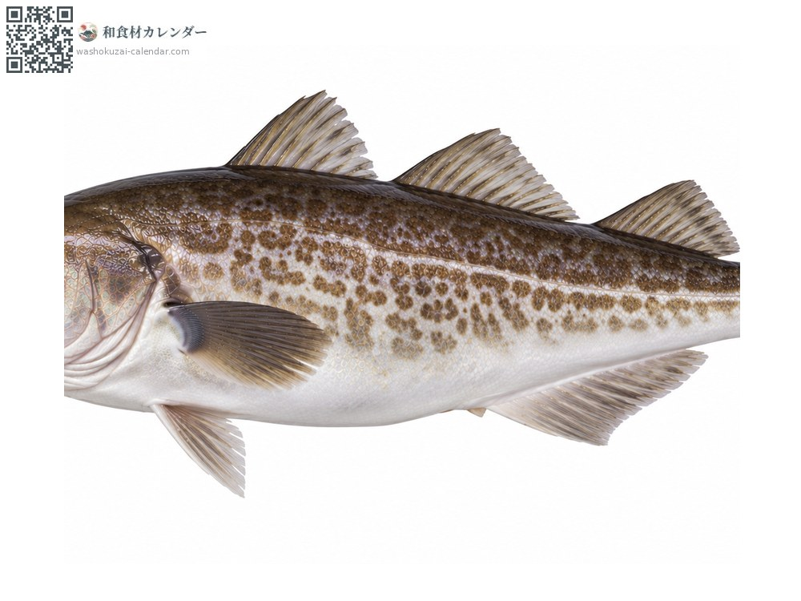
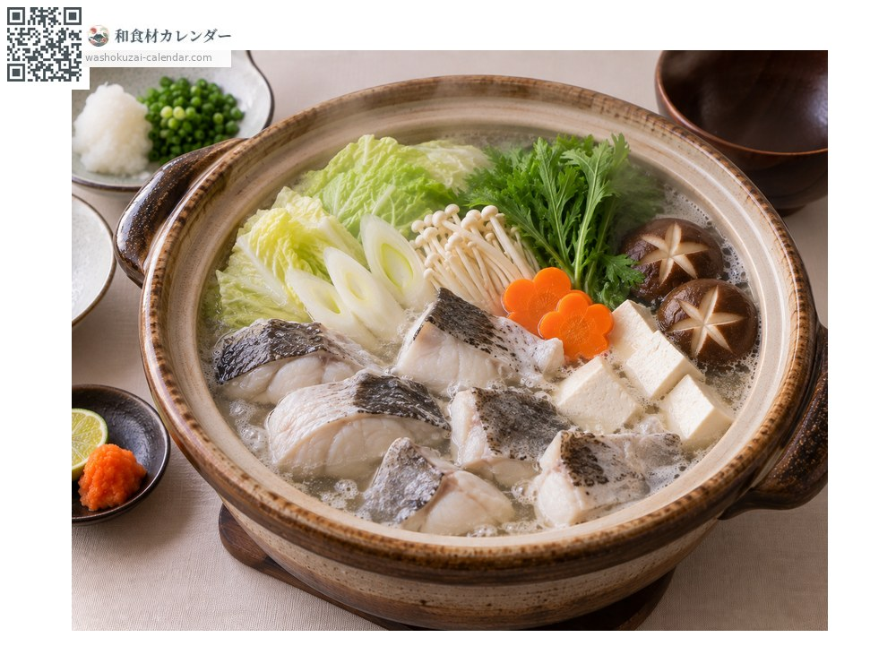
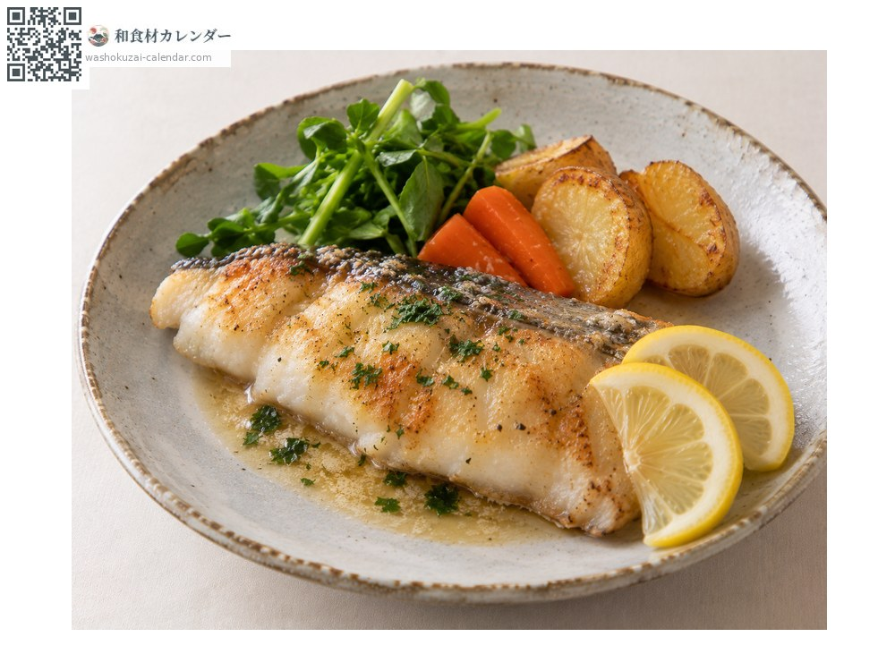
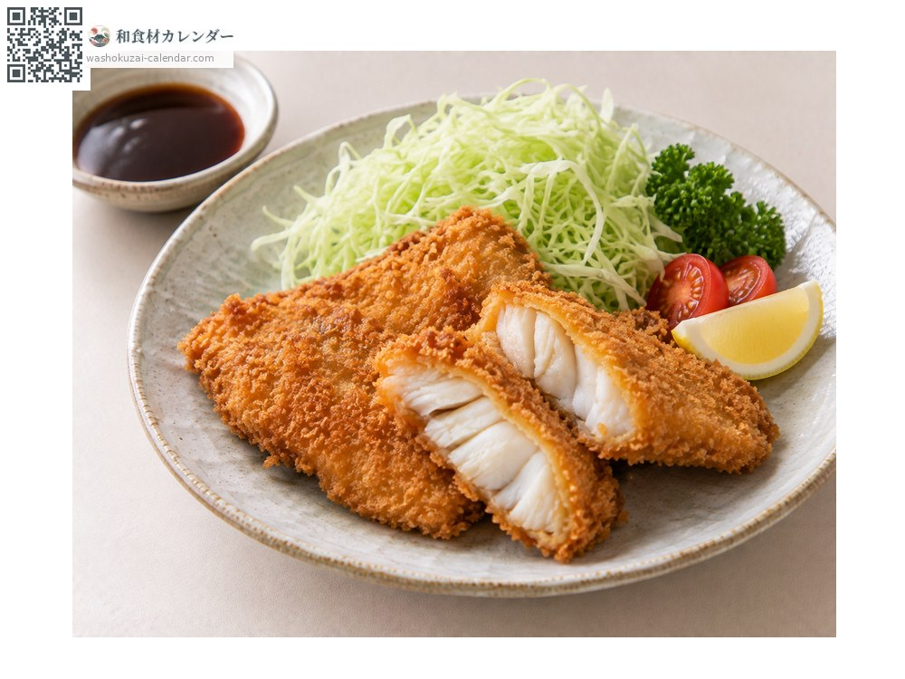
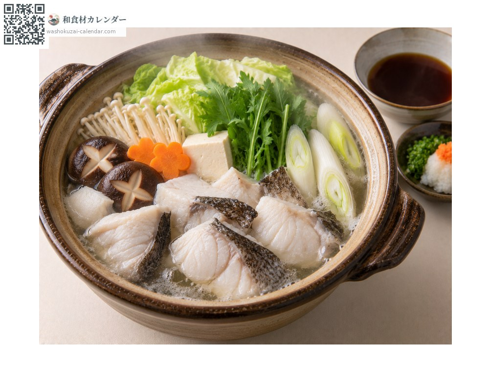

海鲜
真鳕
マダラ まだら madara
别名madara、tara
应季时期为1月、2月、12月

应季时期
1月
2月
3月
4月
5月
6月
7月
8月
9月
10月
11月
12月
应季有供应
烹饪方法

火锅
清淡的鱼肉能吸收汤头。白子也一起放。

香煎黄油鱼排
黄油香煎。

裹面包糠油炸
鱼肉会变得松软。

鳕鱼昆布汤佐橙醋
以昆布高汤快煮后沾橙醋。
挑选方法
鱼肉白皙通透、有弹性。切片不松散。
保存方法
水分多容易坏。撒盐逼出水分后再调理会更好。
主要产地
小知识
冬天的白子称为「たちこ」「きくこ」，被视为珍品。据说是日文「たらふく」（吃到饱）一词的由来。